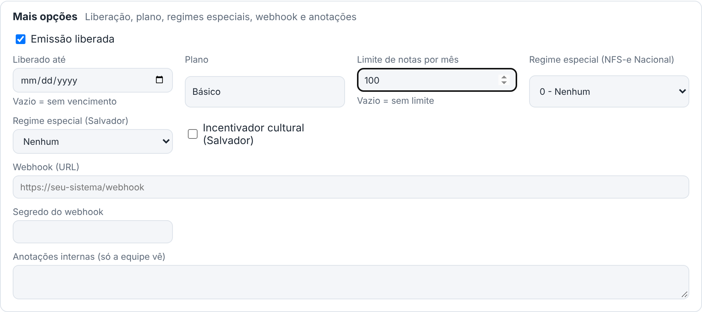

Emissão bloqueada, vencida ou limite atingido
O sistema recusa a nota antes de mandar para a prefeitura quando o cadastro da empresa não permite emitir.
search Como reconhecer
- Ao emitir, aparece "Emissão bloqueada", "Período de uso vencido" ou "Limite mensal de N notas atingido".
- No painel, a empresa aparece como Bloqueada, Vencida ou Limite atingido.
storefront O que o cliente faz
- Fale com o suporte. A mensagem mostra o motivo do bloqueio, quando houver.
- Depois de liberado, reenvie a nota (botão Reenviar em Minhas notas) ou emita de novo.
support_agent O que o suporte faz
- Abra a ficha da empresa e, em Mais opções:
- Bloqueada: marque Emissão liberada.
- Vencida: ajuste Liberado até (vazio = sem vencimento).
- Limite atingido: aumente o Limite de notas por mês (vazio = sem limite), ou espere o mês virar.
- Clique em Salvar alterações. A liberação vale na hora.

Bom saber
| Pergunta | Resposta |
|---|---|
| O que conta para o limite do mês? | As notas autorizadas no mês e as que ainda estão na prefeitura. |
| O cliente vê o motivo do bloqueio? | Sim, o texto de "Motivo do bloqueio" aparece para ele. |
← Voltar para a Central de Ajuda
Última revisão: 08/11/2026